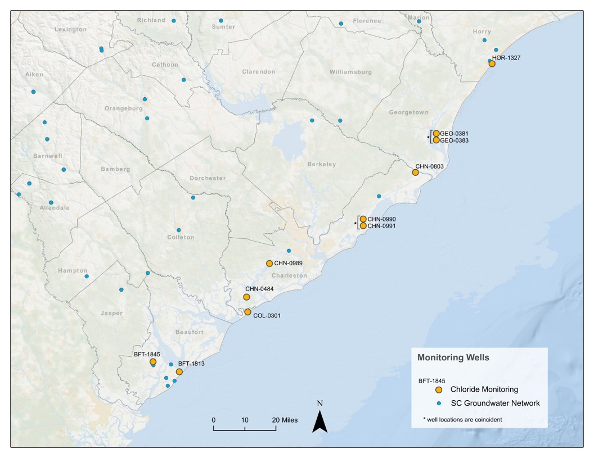

Saltwater Intrusion Monitoring
The SCDNR Hydrology Section monitors coastal aquifers to determine the location of the freshwater-saltwater interface. The monitoring activities will help to predict future scenarios of saltwater intrusion based on current hydrological conditions. Chemical changes in groundwater are monitored to assess salt water intrusion from three basic causes:
- anthropogenic induced (pumping)
- episodic (extreme storm events or drought)
- progressive (relative sea level rise)
What is saltwater intrusion?
Saltwater intrusion occurs when saline water moves into freshwater aquifers. In some cases, this can lead to contamination of sources of drinking water, irrigation, or other freshwater uses.
Why does saltwater intrusion happen?
Saltwater intrusion can occur for both natural and human-caused reasons. The freshwater-saltwater interface varies with fluctuations in tide, seasonal and anual variations in aquifer recharge and discharge, and long-term changes in sea-level. When too much freshwater is pumped from an aquifer, saltwater content can increase in the aquifer.
How does SCDNR monitor saltwater intrusion?
SCDNR monitors the Surficial, Floridan and Black Creek Aquifers with 11 wells that continuously log water level, temperature, and conductivity (which is a chemical signature of saline conditions).
